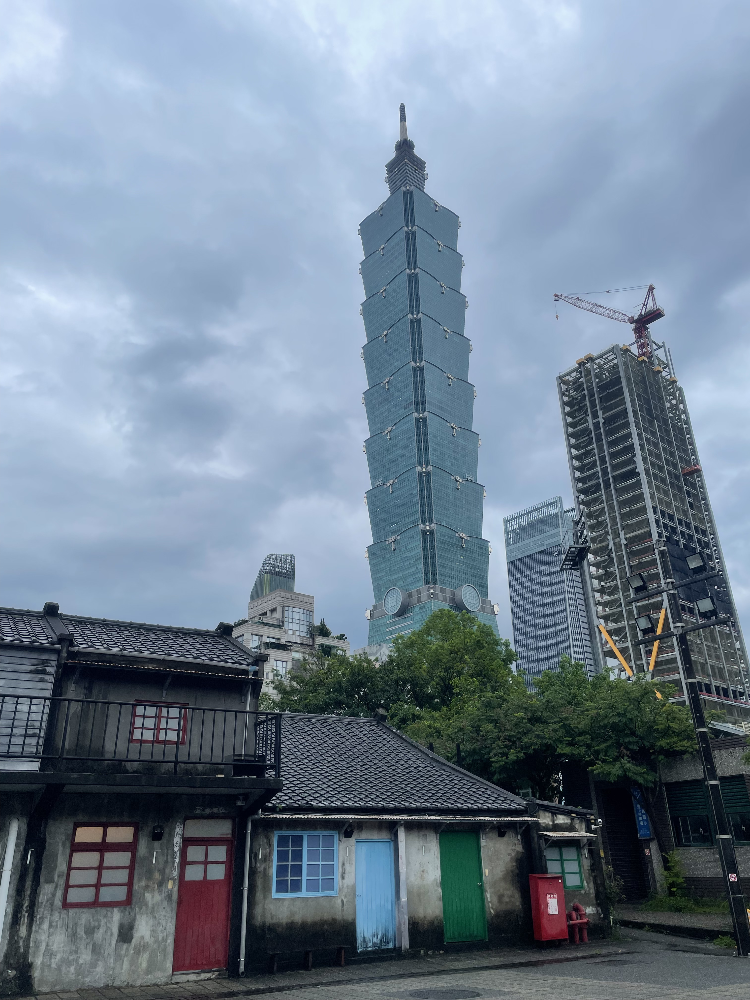
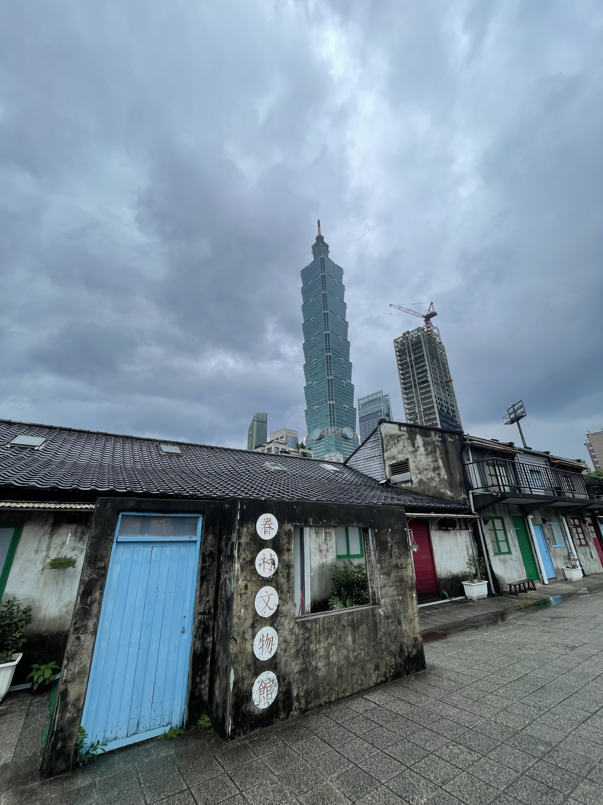
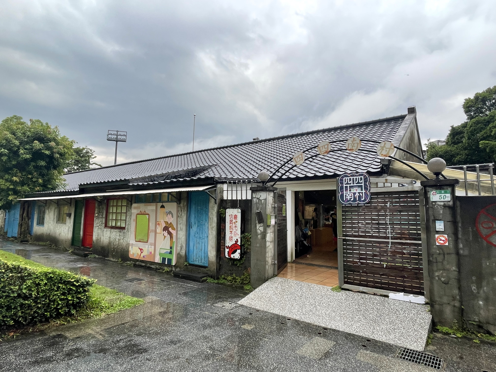
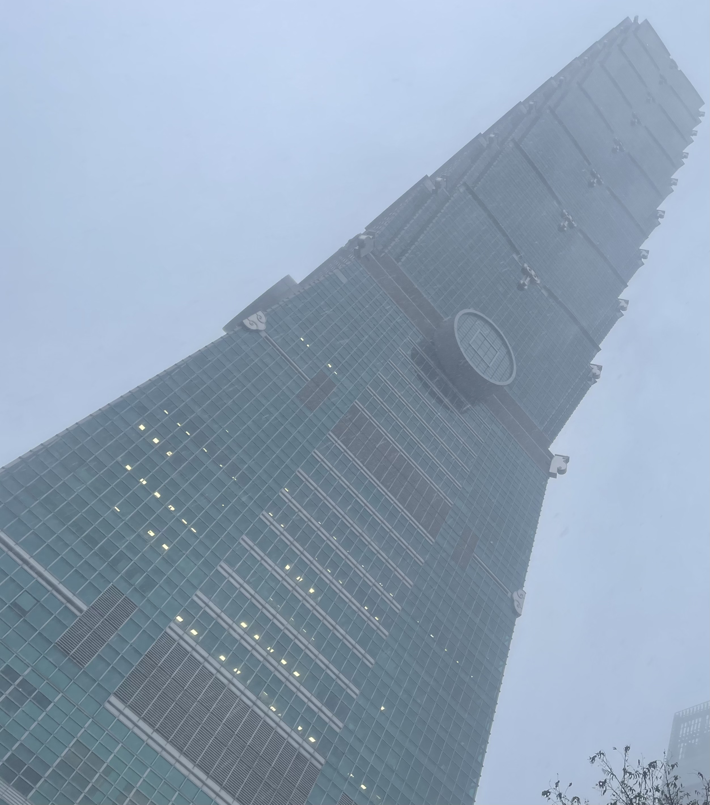
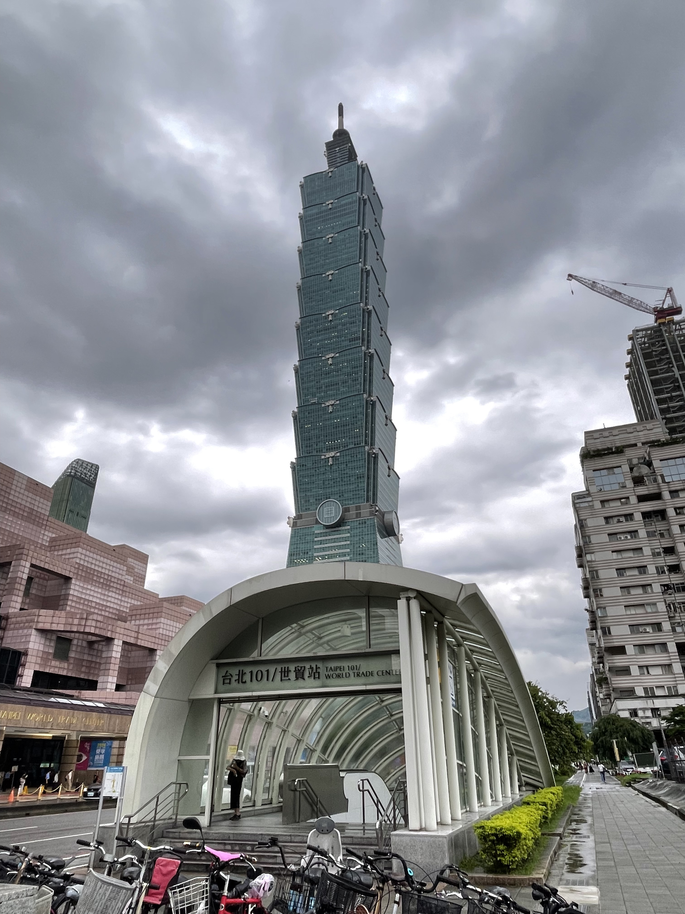

台北市信義區
基本資訊
位於台北市東南側，是台北最具國際形象與現代感的行政區之一。隨著都市計畫的推動，這裡發展成為金融、商業與大型活動高度集中的核心地帶，也逐步形塑出台北都會的天際線。 區內以信義計畫區最具代表性，高樓建築林立，企業總部、百貨商場與國際品牌密集，呈現高度現代化的城市景觀。其中台北101不僅是地標，也象徵信義區在全球城市中的能見度。白天是商務與辦公活動的重心，夜晚則轉換為購物、餐飲與休閒娛樂的聚集場域。 在高度商業化之外，信義區同時保有公共空間與生活機能。寬闊的人行步道、開放式廣場與展演空間，使人流得以分散並延伸，城市活動得以持續發生。整體而言，信義區展現的是台北最前沿、節奏快速且與國際接軌的城市樣貌，是現代都市發展的集中縮影。
推薦景點
| 四四南村
是台北市現存最早的眷村之一，其名稱源自過去第四十四兵工廠的員工宿舍。這個聚落見證了戰後眷村形成的歷史，也承載著早期外省移民與軍眷生活的集體記憶。 隨著都市快速發展，四四南村在高樓環繞之中被完整保留下來，低矮平房與狹窄巷弄形成強烈對比，使其成為信義區中少見的歷史空間。透過修復與再利用，原有住宅轉化為展覽館、文化空間與公共場域，讓過往的生活痕跡得以被重新閱讀。 今日的四四南村不僅是文化保存的案例，也是城市記憶與現代都市共存的象徵。在台北101近在咫尺的背景下，這裡提供了一個能夠放慢腳步、理解城市歷史脈絡的場所，讓人看見信義區繁華背後的另一層時間深度。
| 台北101
是台灣最具代表性的城市地標之一，也曾長期保持世界最高摩天大樓的紀錄。其建築設計融合現代工程技術與東方文化意象，外觀以層層堆疊的結構象徵竹節，寓意節節高升與穩定成長。 作為信義計畫區的核心，台北101集結辦公、購物、觀景與公共空間等多重功能。高樓內部進駐國際企業與金融機構，低樓層則規劃大型商場，成為台北重要的商業與消費據點。觀景台提供俯瞰台北盆地的視角，使人得以從不同高度理解城市的尺度與樣貌。 台北101不僅是一棟建築，更是一種城市象徵。它代表台北在全球城市競逐中的能見度，也見證信義區從規劃到成熟的發展歷程，在快速變動的都市環境中，成為辨識度極高的現代地標。




